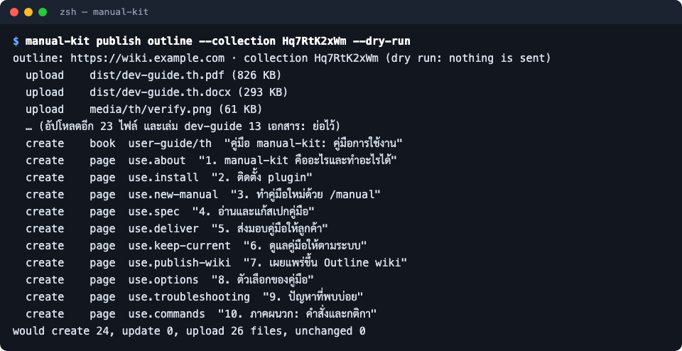

เผยแพร่ขึ้น Outline wiki
ส่งคู่มือขึ้น Outline wiki (เล่มละหนึ่งเอกสาร หน้าละหนึ่งเอกสารย่อย) ดูแผนก่อนด้วย --dry-run แล้วค่อยส่งจริง
- สำหรับ
- ทีมที่ทำคู่มือ
นอกจากไฟล์ส่งลูกค้า คู่มือภายในหรือคู่มือที่ทีมต้องเปิดบ่อยควรอยู่บน wiki ขององค์กร คำสั่ง publish outline ส่งคู่มือขึ้น Outline โดยเล่มหนึ่งเป็นเอกสารหนึ่งฉบับ (ข้อมูลเอกสาร ลิงก์ดาวน์โหลด PDF/Word และสารบัญ) และแต่ละหน้าเป็นเอกสารย่อยใต้เล่ม ภาพ วิดีโอ และไฟล์ PDF/Word ขึ้นเป็นไฟล์แนบ ลิงก์ข้ามหน้าชี้ไปเอกสารบน wiki
ก่อนเริ่ม
- ออกไฟล์ PDF และ Word แล้ว (ถ้าต้องการให้เอกสารเล่มมีลิงก์ดาวน์โหลด)
- ตั้งที่อยู่ wiki ไว้ใน
manual.config.yaml:outline: { baseUrl: https://wiki.example.com }(ไม่มีค่าเริ่มต้น) - รู้ collection ปลายทาง: รหัสหรือ urlId ของ collection (ส่วนท้ายของ URL collection เช่น
Hq7RtK2xWm) - มี API key ของ Outline (Outline: Settings → API & Apps) เก็บไว้ในตัวแปรสภาพแวดล้อม
OUTLINE_API_KEYเท่านั้น manual-kit ไม่อ่าน key จากไฟล์และไม่พิมพ์ key ออกมา
ขั้นตอน
-
ดูแผนก่อน (ไม่ส่งอะไร ไม่ต้องใช้ key) ด้วย --dry-run:
manual-kit publish outline --collection Hq7RtK2xWm --dry-runภาพด้านล่างคือตัวอย่างแผนของคู่มือเล่มนี้ (wiki และ collection สมมติ):

-
ถ้าแผนถูก ส่งจริง โดยใส่ key เฉพาะคำสั่งนั้น:
OUTLINE_API_KEY=... manual-kit publish outline --collection Hq7RtK2xWmตัวเลือกเพิ่มเติม: --parent
<docId>วางเล่มไว้ใต้เอกสารที่มีอยู่ --book ส่งเฉพาะเล่มเดียว --lang เฉพาะภาษาเดียว หรือใส่ค่าประจำไว้ในmanual.config.yaml:outline: { baseUrl: https://wiki.example.com, collection: Hq7RtK2xWm }ถ้าเปลี่ยนชื่อเล่มบน wiki ให้ใส่ชื่อเดียวกันไว้ที่books.<เล่ม>.outline.titleด้วย ไม่อย่างนั้นการส่งครั้งต่อไปจะเปลี่ยนชื่อกลับ -
commit ไฟล์
manual/outline.jsonที่เกิดขึ้น ไฟล์นี้จำว่าหน้าไหนเป็นเอกสารไหนบน wiki และไฟล์แนบไหนส่งไปแล้ว
ผลลัพธ์ที่ได้
เอกสารบน wiki ตามแผน เมื่อคู่มือเปลี่ยนแล้วสั่งซ้ำ manual-kit จะแก้เฉพาะเอกสารที่ข้อความเปลี่ยน อัปโหลดเฉพาะไฟล์ใหม่ และสร้างเอกสารใหม่ถ้ามีคนลบไปจาก wiki ไม่มีการสร้างซ้ำ คนในทีมจึงสั่งซ้ำได้ปลอดภัยทุกครั้งที่ build ใหม่
ปัญหาที่พบบ่อย
| อาการ | สาเหตุ | วิธีแก้ |
|---|---|---|
set the Outline API key in the environment variable OUTLINE_API_KEY |
ไม่ได้ตั้ง key | ตั้งตัวแปรตามขั้นตอนที่ 2 |
name the Outline wiki: outline.baseUrl in the config |
ไม่ได้บอกที่อยู่ wiki | ใส่ outline.baseUrl ใน config |
name the Outline collection: --collection <id or urlId> |
ไม่ได้บอก collection | ใส่ --collection หรือ outline.collection ใน config |
outline.json belongs to collection ... |
เคยส่งไป collection หรือ wiki อื่น | ย้าย manual/outline.json ออกก่อน (ไฟล์หนึ่งผูกกับ wiki และ collection เดียว) |
| เอกสารเล่มไม่มีลิงก์ PDF | ยังไม่ได้ build PDF/Word | manual-kit build pdf และ build docx ก่อน แล้วส่งใหม่ |